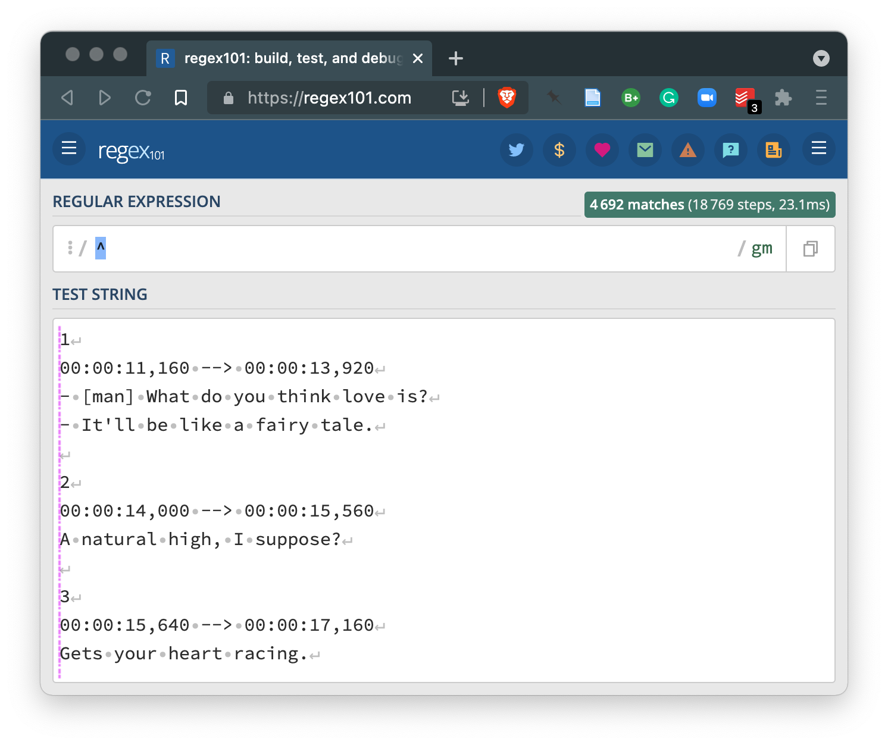
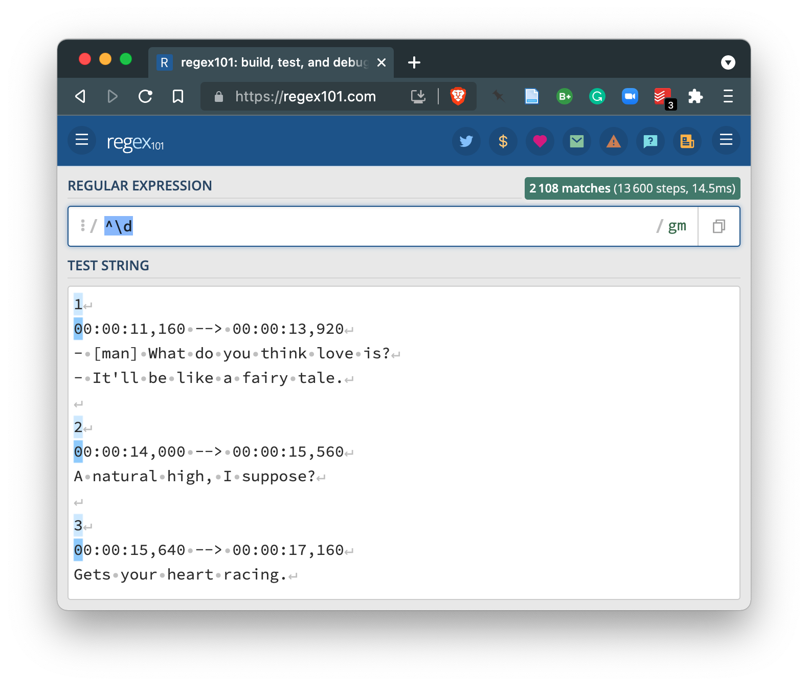
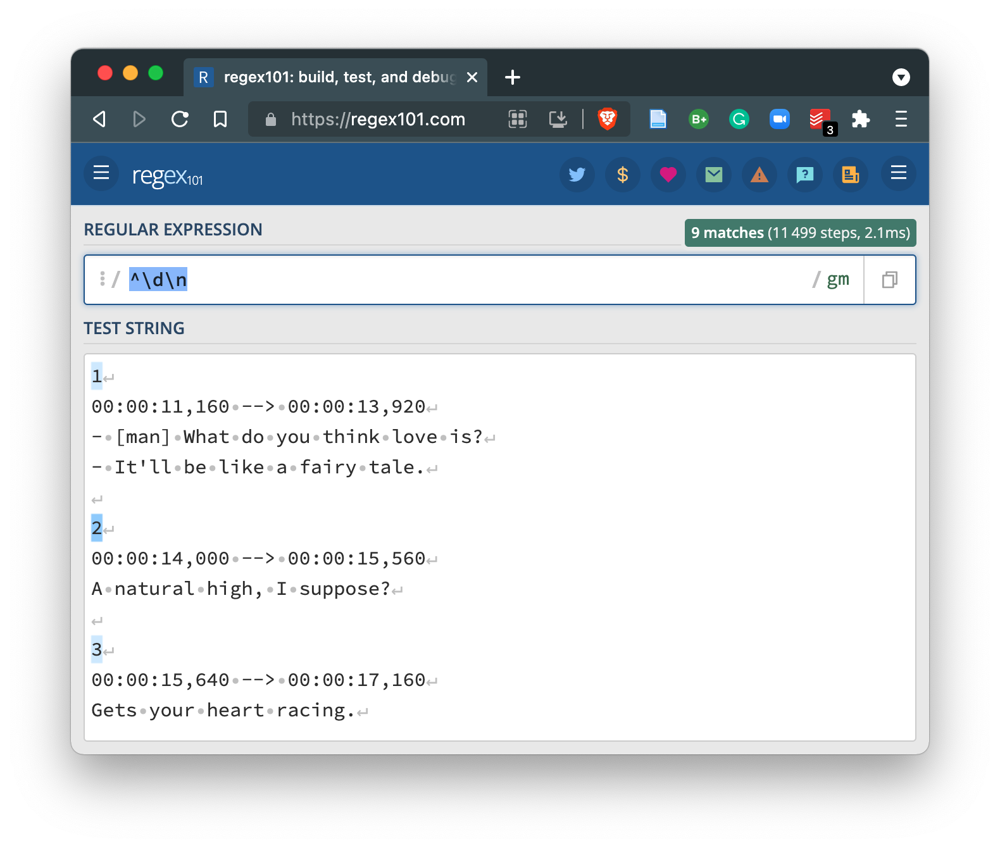
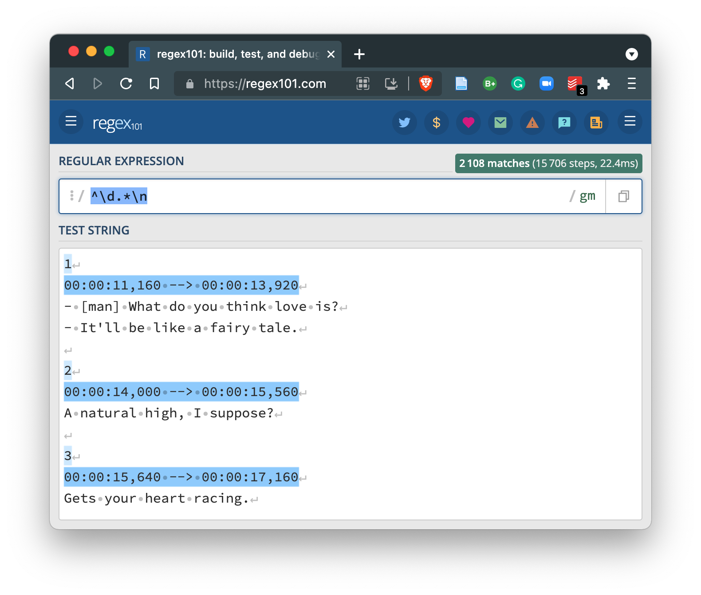

vignettes/recipe_7.Rmd
recipe_7.RmdIn this Recipe, we will will take a closer look at a couple coding strategies that are quite applicable for just about any stage of a text analysis project, but that make particular sense for curating data. We will look at how regular expressions are helpful in developing strategies for matching, extracting, and/ or replacing patterns in character sequences and how to change the dimensions of a dataset to either expand or collapse columns or rows.
As a practical case we will look at curating data from TV subtitles. We will use both regular expressions and strategies to reshape datasets. To get started let’s load the main packages we will work with in this recipe.
It is often the case that when we are working with text that we will want to find, extract, and/ or replace characters or character sequences (strings) in our data or datasets. If the string patterns are extremely simple, we may only need to use ‘literal’ strings (the exact term you are searching for), such are used in typical searches you may perform on a word processing document, for example, that help you find all the occurrences of a string. In other cases, however, the string patterns are not so literal. That is to say that we may want to find some sort of meta-character string pattern such as any single digit, sequence of digits, words that begin with capital letters, the last words of a line, etc. In this case we cannot simple type a literal character sequence and match these patterns. However if there is a regular pattern and the string search syntax known as regular expressions can help!
Take for example the following text:
1
00:00:11,160 --> 00:00:13,920
- [man] What do you think love is?
- It'll be like a fairy tale.
2
00:00:14,000 --> 00:00:15,560
A natural high, I suppose?
3
00:00:15,640 --> 00:00:17,160
Gets your heart racing.This is small fragment of the contents from a subtitle file with SRT (SubRip File Format) formatting. As we are most likely interested in extracting the language from these sequences and removing the other formatting sequences, the question is how do we do this? Regular expressions!
A regular expression (or regex) is the use of various general pattern matching conventions to capture abstract, but regular patterns in strings. Below are some of the most common types of regex operators, grouped in terms of their function.
Classes
\w any letter or digit character\d any digit character\s any whitespace character. any single characterQuantifiers
x? zero or one of x
x* zero or more of x
x+ one or more of x
x{2,} two or more of x
x{5,10} five to ten of x
Anchors
^ start of string$ end of string\b word boundary\n new lineEscape
\ make any character class, quantifier, anchor, etc. literalIn this case, we want to “clean” the text by separating the non-linguistic information from the linguistic information. In the process of cleaning we may match a pattern to extract (or keep) or match to remove or replace. Looking at the text here, it looks like a good first step may be to match to remove. Specifically, let’s see if we can match the lines that start with digits.
Building a working regular expression requires some trial and error. To speed up the process, I tend to use an interactive regex website, regex101. I’ve opened this website and pasted the example text into the ‘TEST STRING’ field.
Now let’s work on building a regex for this example. Let’s try adding the ^ operator to match the beginning of the lines.

Nothing matched, but the regex101 site shows us with the pink vertical line that that’s were the pattern matching is to begin.
Now let’s add \d the digit operator.

We now see that the lines where there the first character is a digit are active and the first digit itself is highlighted. So far so good.
Comparing our active lines, we see that three of the six only have one digit and then end in a new line (⏎). If we add the \n operator to match a new line we get the following.

You can see that we lost the longer lines which contain various other characters before the end of the line. So we want to be able to capture the lines that start with digits that either have more characters before the end of the line the first digits and those without more characters. We can turn to the .* operator combination which will match any character (.) zero more more times (*). Inserting this between our existing expression provides the desired match.

So now we have a decent regex (^\d.*\n) that will match the lines we would like to remove from our example text. First let me read in the example text into a character vector where each line is an element in the vector.
example_text <-
read_lines(file = "recipe_7/data/original/love_on_the_spectrum/Love.On.The.Spectrum.S01E01.WEBRip.x264-ION10.srt", # path to the .srt file
n_max = 12) # read only the first 12 lines
example_text # view character vector## [1] "1" "00:00:11,160 --> 00:00:13,920"
## [3] "- [man] What do you think love is?" "- It'll be like a fairy tale."
## [5] "" "2"
## [7] "00:00:14,000 --> 00:00:15,560" "A natural high, I suppose?"
## [9] "" "3"
## [11] "00:00:15,640 --> 00:00:17,160" "Gets your heart racing."example_text is the same text as above, but now each line from the file has been coverted into a separate vector. We can concatenate the vectors with a new line operator (\n) to show the text as it appears above.
example_text %>% # character vector
cat(sep = "\n") # concatenate the vectors adding a new line (\n) between each## 1
## 00:00:11,160 --> 00:00:13,920
## - [man] What do you think love is?
## - It'll be like a fairy tale.
##
## 2
## 00:00:14,000 --> 00:00:15,560
## A natural high, I suppose?
##
## 3
## 00:00:15,640 --> 00:00:17,160
## Gets your heart racing.Now let’s put our regular expression to work. To do this we turn to the stringr package. Specifically the function str_remove() which has two arguments string and pattern. The string will be the example_text character vector and the pattern will be our regular expression (^\d.*\n) –with two twists. First, our example_text is broken into separate vectors by lines, so there are no more new line anchors (\n). Second, in R any \ characters in regexes need to be escaped, that is they need an appended \. So our regex becomes ^\\d.*.
example_text %>% # character vector
str_remove(pattern = "^\\d.*") %>% # remove non-linguistic lines with regex
cat(sep = "\n") # concatenate vectors##
##
## - [man] What do you think love is?
## - It'll be like a fairy tale.
##
##
##
## A natural high, I suppose?
##
##
##
## Gets your heart racing.That works! Now there may be more to clean up, but this example should highlight the practicality of using regular expressions in text processing. Regular expressions are used in many ways across programming languages, including R, as well as in many desktop and web applications –so keep your eyes open for opportunities to use regexes!
Another key skill in which to acquire some proficiency is reshaping data. Reshaping here refers to changing the dimensions of a dataset –column-wise and/ or row-wise –to better fit the goals of the researcher.
Let’s look at column-wise operations first. Consider the following single column data frame below.
example_df <-
tribble(
~doc_id,
"Love.On.The.Spectrum.S01E01",
"Love.On.The.Spectrum.S01E02",
"Love.On.The.Spectrum.S01E03"
)
example_df # show data frame| doc_id |
|---|
| Love.On.The.Spectrum.S01E01 |
| Love.On.The.Spectrum.S01E02 |
| Love.On.The.Spectrum.S01E03 |
In this example we have a data frame with a column doc_id with three observations. The observations for doc_id happen to contain various pieces of information that we would like to have in separate columns namely the title of a TV series, the season number, and the episode number. Let’s shoot to get our dataset in the following column structure.
tribble(
~series, ~season, ~episode,
"Love On The Spectrum", "01", "01",
"Love On The Spectrum", "01", "02",
"Love On The Spectrum", "01", "03"
)| series | season | episode |
|---|---|---|
| Love On The Spectrum | 01 | 01 |
| Love On The Spectrum | 01 | 02 |
| Love On The Spectrum | 01 | 03 |
To separate columns we use the separate() function from the tidyr package. It takes four main arguments, the dataset data, the column to separate col, the new column names to separate the columns into into, and the pattern to use to separate the values of the columns sep. In the single column table above we see that there is a period . that separates each word in the series title, but it also separates the title from the season and episode group.
Let’s apply separate() to create five new columns that correspond to the number of columns that will result on breaking the values by .. Since we need the period and not the ‘any character’ operator (.) from regular expressions, we need to escape the period \\. (Remember that in R all backslashes in regular expressions are escaped –therefore we have \\. and not \.).
example_df %>% # example dataset
separate(col = doc_id, # column to separate
into = c("column_1", "column_2", "column_3", "column_4", "column_5"), # new column names
sep = "\\.") # expression to separate the columns| column_1 | column_2 | column_3 | column_4 | column_5 |
|---|---|---|---|---|
| Love | On | The | Spectrum | S01E01 |
| Love | On | The | Spectrum | S01E02 |
| Love | On | The | Spectrum | S01E03 |
We now have five columns, named generically for the moment. column_5 contains the season and episode. But in this case there is not a clear character to use to break the column into two. But on closer inspection we can see that we can use the letter ‘E’ (for ‘episode’) to separate these values. It will mean that the ‘E’ will be eliminated, but that’s OK because the column title will be sufficiently informative.
example_df %>% # example dataset
separate(col = doc_id, # column to separate
into = c("column_1", "column_2", "column_3", "column_4", "column_5"), # new column names
sep = "\\.") %>% # expression to separate the columns
separate(col = column_5, # column to separate
into = c("season", "episode"), # new column names
sep = "E") # expression to separate the columns| column_1 | column_2 | column_3 | column_4 | season | episode |
|---|---|---|---|---|---|
| Love | On | The | Spectrum | S01 | 01 |
| Love | On | The | Spectrum | S01 | 02 |
| Love | On | The | Spectrum | S01 | 03 |
Now the opposite of separate() is unite(). So this function will gather a set of columns and their values together. Let’s unite the first four columns and call it series adding whitespace between each value (sep = " ").
example_df %>% # example dataset
separate(col = doc_id, # column to separate
into = c("column_1", "column_2", "column_3", "column_4", "column_5"), # new column names
sep = "\\.") %>% # expression to separate the columns
separate(col = column_5, # column to separate
into = c("season", "episode"), # new column names
sep = "E") %>% # expression to separate the columns
unite(col = "series", # new column name
column_1:column_4, # columns to unite (using the between operator `:`)
sep = " ") # separator to use to join the values of the columns| series | season | episode |
|---|---|---|
| Love On The Spectrum | S01 | 01 |
| Love On The Spectrum | S01 | 02 |
| Love On The Spectrum | S01 | 03 |
Just for completeness, let’s use our newly acquired knowledge about regular expressions and remove the ‘S’ in the values of the season column.
example_df %>% # example dataset
separate(col = doc_id, # column to separate
into = c("column_1", "column_2", "column_3", "column_4", "column_5"), # new column names
sep = "\\.") %>% # expression to separate the columns
separate(col = column_5, # column to separate
into = c("season", "episode"), # new column names
sep = "E") %>% # expression to separate the columns
unite(col = "series", # new column name
column_1:column_4, # columns to unite (using the between operator `:`)
sep = " ") %>% # separator to use to join the values of the columns
mutate(season = str_remove(season, pattern = "^S")) # remove the S from the values of season| series | season | episode |
|---|---|---|
| Love On The Spectrum | 01 | 01 |
| Love On The Spectrum | 01 | 02 |
| Love On The Spectrum | 01 | 03 |
As you can imagine, there are occasions when we might want to change the the dimensions of a dataset by rows. Much in the same fashion as you saw in the previous section when we worked with expanding and collapsing columns, we can expand and collapse rows. This is a typical task to perform in text analysis on the linguistic units within a column and across rows at some linguistic level.
Let’s create an example data frame to work with to demonstrate various R programming strategies for expanding and collapsing rows with textual data.
example_df <-
tribble(
~student_id, ~class_id, ~comments,
"421", "A", "This class was fun! I would like to continue to work with my final essay and potentially turn in into an honors thesis. I will contact my professor to find out if this is possibility. Thanks!",
"238", "B", "What shoud I say? I thought I was going to like the class but we did not get to do a final essay. I was hoping to develop a topic in this class that would help me work towards applying for an honors thesis."
)
example_df| student_id | class_id | comments |
|---|---|---|
| 421 | A | This class was fun! I would like to continue to work with my final essay and potentially turn in into an honors thesis. I will contact my professor to find out if this is possibility. Thanks! |
| 238 | B | What shoud I say? I thought I was going to like the class but we did not get to do a final essay. I was hoping to develop a topic in this class that would help me work towards applying for an honors thesis. |
example_df has three columns. Two columns correspond to metadata and the third is text. The text includes a few sentences. So the observations, as they stand, correspond to each student’s comments for a given class. If we would like to have our observations correspond to a smaller linguistic unit, say sentences, words, etc. we will want to expand the rows for each of the desired linguistic unit –while still maintaining the appropriate metadata information.
An indispensable package for working with text in data frames is the tidytext package. The workhorse of the tidytext package is the unnest_tokens() function. This function allows us to separate rows in a column with text into rows corresponding to some smaller linguistic unit or ‘token’ while maintaining the tidy format of the overall dataset.
Included with the unnest_tokens() function is the option to create a number of common token types (characters, words, ngrams, sentences, etc.) or one can specify the criterion manually using regular expressions.
So let’s apply unnest_tokens() to the example_df data frame. First let’s look at breaking the comments column into sentences.
example_df %>%
unnest_tokens(output = "comment_sentences", # new column name
input = "comments", # input column
token = "sentences") # token type to create| student_id | class_id | comment_sentences |
|---|---|---|
| 421 | A | this class was fun! |
| 421 | A | i would like to continue to work with my final essay and potentially turn in into an honors thesis. |
| 421 | A | i will contact my professor to find out if this is possibility. |
| 421 | A | thanks! |
| 238 | B | what shoud i say? |
| 238 | B | i thought i was going to like the class but we did not get to do a final essay. |
| 238 | B | i was hoping to develop a topic in this class that would help me work towards applying for an honors thesis. |
We see that our data frame has been reshaped by rows –but importantly maintaining the metadata information! In this way our data frame continues to conform to tidy dataset principles.
Of note is the fact that by default unnest_tokens() will lowercase the text and drop the original/ input column. We can override one or both of these settings.
example_df %>%
unnest_tokens(output = "comment_sentences", # new column name
input = "comments", # input column
token = "sentences", # token type to create
to_lower = FALSE, # don't lowercase the output
drop = FALSE) # don't drop the input column| student_id | class_id | comments | comment_sentences |
|---|---|---|---|
| 421 | A | This class was fun! I would like to continue to work with my final essay and potentially turn in into an honors thesis. I will contact my professor to find out if this is possibility. Thanks! | This class was fun! |
| 421 | A | This class was fun! I would like to continue to work with my final essay and potentially turn in into an honors thesis. I will contact my professor to find out if this is possibility. Thanks! | I would like to continue to work with my final essay and potentially turn in into an honors thesis. |
| 421 | A | This class was fun! I would like to continue to work with my final essay and potentially turn in into an honors thesis. I will contact my professor to find out if this is possibility. Thanks! | I will contact my professor to find out if this is possibility. |
| 421 | A | This class was fun! I would like to continue to work with my final essay and potentially turn in into an honors thesis. I will contact my professor to find out if this is possibility. Thanks! | Thanks! |
| 238 | B | What shoud I say? I thought I was going to like the class but we did not get to do a final essay. I was hoping to develop a topic in this class that would help me work towards applying for an honors thesis. | What shoud I say? |
| 238 | B | What shoud I say? I thought I was going to like the class but we did not get to do a final essay. I was hoping to develop a topic in this class that would help me work towards applying for an honors thesis. | I thought I was going to like the class but we did not get to do a final essay. |
| 238 | B | What shoud I say? I thought I was going to like the class but we did not get to do a final essay. I was hoping to develop a topic in this class that would help me work towards applying for an honors thesis. | I was hoping to develop a topic in this class that would help me work towards applying for an honors thesis. |
If we do not want to use one of the default token types, we can set the token = to regex and then provide a new argument pattern =. The value for the pattern argument is your own regular expression. So say we wanted to break the comments by periods ., and not question marks or exclamation points, we could do this in this way.
example_df %>%
unnest_tokens(output = "comment_sentences", # new column name
input = "comments", # input column
token = "regex", # use a regular expression
pattern = "\\.") # specify the regex to use for splitting| student_id | class_id | comment_sentences |
|---|---|---|
| 421 | A | this class was fun! i would like to continue to work with my final essay and potentially turn in into an honors thesis |
| 421 | A | i will contact my professor to find out if this is possibility |
| 421 | A | thanks! |
| 238 | B | what shoud i say? i thought i was going to like the class but we did not get to do a final essay |
| 238 | B | i was hoping to develop a topic in this class that would help me work towards applying for an honors thesis |
Note that since this approach uses a regular expression to do the splitting, the regex matches are deleted from the output (i.e. the periods are gone).
Let’s turn to a situation in which our data frame has sentences as the observations.
example_df <-
example_df %>%
unnest_tokens(output = "comment_sentences", # new column name
input = "comments", # input column
token = "sentences", # token type to create
to_lower = FALSE) # don't lowercase the output
example_df| student_id | class_id | comment_sentences |
|---|---|---|
| 421 | A | This class was fun! |
| 421 | A | I would like to continue to work with my final essay and potentially turn in into an honors thesis. |
| 421 | A | I will contact my professor to find out if this is possibility. |
| 421 | A | Thanks! |
| 238 | B | What shoud I say? |
| 238 | B | I thought I was going to like the class but we did not get to do a final essay. |
| 238 | B | I was hoping to develop a topic in this class that would help me work towards applying for an honors thesis. |
And imagine that we want to collapse the sentences grouping them together by the student_id and the class_id, effectively re-creating the original data frame we started with. To do this we turn to our tidyverse tools.
example_df %>% # dataset with comment_sentences column
group_by(student_id, class_id) %>% # group by student_id and class_id
summarize(comments = str_flatten(string = comment_sentences, # unite comment_sentences
collapse = " ")) %>% # join comment_sentences by a single whitespace character
ungroup() # remove grouping attribute on the data frame| student_id | class_id | comments |
|---|---|---|
| 238 | B | What shoud I say? I thought I was going to like the class but we did not get to do a final essay. I was hoping to develop a topic in this class that would help me work towards applying for an honors thesis. |
| 421 | A | This class was fun! I would like to continue to work with my final essay and potentially turn in into an honors thesis. I will contact my professor to find out if this is possibility. Thanks! |
group_by() specifies which column(s) should be used to unite the rows. summarize() is similar to mutate() in that it creates a new column. It is different, however, in that it will only return the grouping column(s) and the new column created by the operation contained within summarize(). In this case we applied the str_flatten() function, from the stringr package, to unite the comment_sentences column values. The collapse = argument let’s use specify what character(s) should be used to separate the united values.
So let’s put these our regular expression and reshaping data skills to work in a practical example. In this case we will be looking at curating data from TV subtitles for the Love on the Spectrum series which is a docuseries following the dating experiences of individuals on the Autism spectrum in Australia.
The data was manually downloaed from Opensubtitles.org and the files we will use are SRT formatted, as seen below.
1
00:00:11,160 --> 00:00:13,920
- [man] What do you think love is?
- It'll be like a fairy tale.
2
00:00:14,000 --> 00:00:15,560
A natural high, I suppose?
3
00:00:15,640 --> 00:00:17,160
Gets your heart racing.This format is used to display the subtitles at the correct moment on the screen so there is information which encodes the sequence of which subtitles to show, the actual timestamp duration which give the precise duration that the subtitle should show, and the text that is to be shown. This text may have conventions to display the text in particular ways and/ or signal cues for the hearing impaired ([man], for example).
We will first need to read these files into the R session. They are found in this directory structure:
recipe_7/data/
├── derived/
└── original/
└── love_on_the_spectrum/
├── Love.On.The.Spectrum.S01E01.WEBRip.x264-ION10.srt
├── Love.On.The.Spectrum.S01E02.WEBRip.x264-ION10.srt
└── Love.On.The.Spectrum.S01E03.WEBRip.x264-ION10.srtTo read in the files I will use the readtext() function. The main argument is file which takes a path to the file(s). In this case I’ve added a wildcard * to allow for the reading of multiple files with the .srt extension. (Note: the * wildcard is not a regular expression convention but it does function much like the regex .*.)
lots_files <-
readtext(file = "recipe_7/data/original/love_on_the_spectrum/*.srt", # only .srt files
verbosity = 0) %>% # suppress warnings
as_tibble() # convert to a tibble for extended data frame features
glimpse(lots_files) # preview dataset## Rows: 3
## Columns: 2
## $ doc_id <chr> "Love.On.The.Spectrum.S01E01.WEBRip.x264-ION10.srt", "Love.On.T…
## $ text <chr> "1\n00:00:11,160 --> 00:00:13,920\n- [man] What do you think lo…From the output of glimpse() we see that the structure of lots_files has two columns doc_id and text and three rows.
Let’s select just the doc_id column and look at the values.
| doc_id |
|---|
| Love.On.The.Spectrum.S01E01.WEBRip.x264-ION10.srt |
| Love.On.The.Spectrum.S01E02.WEBRip.x264-ION10.srt |
| Love.On.The.Spectrum.S01E03.WEBRip.x264-ION10.srt |
We see that the names of each of the SRT files appears in the doc_id column. These names have a pattern, such that there is a period . separating each of a number of pieces of information –including the series name, the season, and the episode. Let’s work separate this information into distinct columns effectively expanding the columns in the dataset. The idealized structure will look like the example below.
| series | season | episode |
|---|---|---|
| Love On The Spectrum | 01 | 01 |
| Love On The Spectrum | 01 | 02 |
| Love On The Spectrum | 01 | 03 |
Let’s use the separate() function and apply it to the doc_id column. If we count up the number of columns that will be created by breaking the values in doc_id by the period . we will have eight columns. We only want to work with the first five, however. Knowing this we can set the argument into to a character vector with the names of five new columns. The sep argument is a period \\. and the extra columns (the remaining three of the eight) are set to be dropped (i.e. not included).
lots_files_separate <-
lots_files %>% # dataset
separate(col = doc_id, # column to separate
into = c("name_1", "name_2", "name_3", "name_4", "name_5"), # new column names
sep = "\\.", # pattern to separate the column values
extra = "drop") # drop any extra columns created in the separation
lots_files_separate %>% # separated dataset
select(-text) # do not show the `text` column here| name_1 | name_2 | name_3 | name_4 | name_5 |
|---|---|---|---|---|
| Love | On | The | Spectrum | S01E01 |
| Love | On | The | Spectrum | S01E02 |
| Love | On | The | Spectrum | S01E03 |
Now we have five new columns that were derived from the doc_id column. Note that the names for the columns were arbitrary. Since I know that we will be doing more changes to the columns I did not worry about creating meaningful column names.
The name_5 column contans the season and episode information. We want to break this column up into two columns for each of these pieces of information. To do this we look at the values in name_5 and see if there is some way to split/ separate the values that is consistent. It turns out we can use the ‘E’ for episode to separate the values between season and episode.
lots_files_separate <-
lots_files_separate %>% # dataset
separate(col = name_5, # column to separate
into = c("season", "episode"), # new columns
sep = "E") # pattern to use to separate the values
lots_files_separate %>% # separated dataset
select(-text) # do not show the `text` column here| name_1 | name_2 | name_3 | name_4 | season | episode |
|---|---|---|---|---|---|
| Love | On | The | Spectrum | S01 | 01 |
| Love | On | The | Spectrum | S01 | 02 |
| Love | On | The | Spectrum | S01 | 03 |
The new columns season and episode appear now.
Let’s now create the series column by uniting the first four columns (i.e. name_1 through name_4). We can use the unite() function for this. unite() needs the name of the new column (col), a vector of the columns to unite (in this case name_1:name_4, which is equivalent to c(name_1, name_2, name_3, name_4)), and the separator for the new values (sep).
lots_files_unite <-
lots_files_separate %>% # dataset
unite(col = "series", # new column name
name_1:name_4, # columns to unite
sep = " ") # separator to add between of the column values
lots_files_unite %>% # united dataset
select(-text) # do not show the `text` column here| series | season | episode |
|---|---|---|
| Love On The Spectrum | S01 | 01 |
| Love On The Spectrum | S01 | 02 |
| Love On The Spectrum | S01 | 03 |
The last thing to do is to clean up the season column values by removing the ‘S’ before each season number. We can just use the str_remove(). Notice that we use the mutate() function to modify columns, in this case we are going to modify the season column and then we are going to overwrite the existing season column with the results of str_remove().
lots_meta <-
lots_files_unite %>% # dataset
mutate(season = str_remove(season, "S")) # remove 'S' in season and overwrite existing season column
glimpse(lots_meta) # preview full dataset## Rows: 3
## Columns: 4
## $ series <chr> "Love On The Spectrum", "Love On The Spectrum", "Love On The S…
## $ season <chr> "01", "01", "01"
## $ episode <chr> "01", "02", "03"
## $ text <chr> "1\n00:00:11,160 --> 00:00:13,920\n- [man] What do you think l…Great! We now have the metadata information curated as we aimed to do.
It’s now time to turn our attention to working with the text column. Let’s take a look at the first 500 characters in the first observation of the text column.
lots_meta$text[1] %>% # subset the first observation of the text column
str_trunc(width = 500) %>% # truncate the values to 500 characters
cat() # print the characters for inspection1
00:00:11,160 --> 00:00:13,920
- [man] What do you think love is?
- It'll be like a fairy tale.
2
00:00:14,000 --> 00:00:15,560
A natural high, I suppose?
3
00:00:15,640 --> 00:00:17,160
Gets your heart racing.
4
00:00:17,240 --> 00:00:19,600
Can make people do crazy things.
5
00:00:19,680 --> 00:00:23,320
You just feel very warm inside yourself
as a person.
6
00:00:23,400 --> 00:00:25,360
- [man] So, have you ever been in love?
- No.
7
00:00:25,440 --> 00:00:27,240
- [man] Have you be...What we see from the above output is that each row in the text column has the dialogue for each series, season, and episode in each row. We also see that this dialogue is not conducive to language research given the SRT formatting. Ideally we would like to clean this SRT information (sequence, timestamps, and other non-linguistic cues) and only retain the dialogue.
So an idealized dataset for this data would look something like this:
| series | season | episode | dialogue |
|---|---|---|---|
| Love On The Spectrum | 01 | 01 | It’ll be like a fairy tale. A natural high, I suppose? Gets your heart racing. Can make people do crazy things. You just feel very warm inside yourself as a person. … |
| Love On The Spectrum | 01 | 02 | I’ve never actually dated anyone in the past. I’ve been dreaming about marriage for years, ever since I left school. I do feel like I’m ready. … |
| Love On The Spectrum | 01 | 03 | What do you think love is? It can make people do crazy things that they wouldn’t think of doing, make them act all bizarre. … |
So, before we get started we should think about how we could go about getting to this idealized format given the format of the text and the R programming strategies at our disposal.
First, it is always a good idea to look at closely at the internal structure of the text. Looking at the text we can see that each observation in text has a series of lines, separated by \n.
lots_files$text[1] %>% # first observation of the `text` column
str_trunc(width = 200) # only show the first 200 characters## [1] "1\n00:00:11,160 --> 00:00:13,920\n- [man] What do you think love is?\n- It'll be like a fairy tale.\n\n2\n00:00:14,000 --> 00:00:15,560\nA natural high, I suppose?\n\n3\n00:00:15,640 --> 00:00:17,160\nGets yo..."For the most part the distinct lines contain either dialogue or SRT conventions for displaying subtitles on a screen. So a potential first step to cleaning this data could be to split each observation into lines. We can do this by using the unnest_tokens() function and use a regular expression to separate by new line anchors \\n.
lots_meta_lines <-
lots_meta %>% # dataset with `text` column
unnest_tokens(output = lines, # new column
input = text, # input column
token = "regex", # use regular expression to split
pattern = "\\n", # split by new line anchor
to_lower = FALSE) # do not lowercase the text
lots_meta_lines %>% # dataset
slice_head(n = 10) # preview first 10 observations| series | season | episode | lines |
|---|---|---|---|
| Love On The Spectrum | 01 | 01 | 1 |
| Love On The Spectrum | 01 | 01 | 00:00:11,160 –> 00:00:13,920 |
| Love On The Spectrum | 01 | 01 | - [man] What do you think love is? |
| Love On The Spectrum | 01 | 01 | - It’ll be like a fairy tale. |
| Love On The Spectrum | 01 | 01 | 2 |
| Love On The Spectrum | 01 | 01 | 00:00:14,000 –> 00:00:15,560 |
| Love On The Spectrum | 01 | 01 | A natural high, I suppose? |
| Love On The Spectrum | 01 | 01 | 3 |
| Love On The Spectrum | 01 | 01 | 00:00:15,640 –> 00:00:17,160 |
| Love On The Spectrum | 01 | 01 | Gets your heart racing. |
We can see from the first 10 observations that there is a consistent pattern in which the lines that start with a digit are not dialogue. It’s worthwhile to open one or more of the original .srt files in a text editor (in RStudio or some other text editing software) to ensure this is the case.
On my inspection it does look like it is safe to target lines starting with digits to remove. Just as a sanity check, however, we can instead search for all the lines that start with digits and make sure that we do not get something that we would like to keep.
To search for lines that start with digits, we can craft a regular expression to use with the str_detect() function. This will return a logical value, TRUE if there’s a match, FALSE otherwise. Wrapping str_detect() with filter() will filter for only rows that return TRUE.
lots_meta_lines %>% # dataset
filter(str_detect(lines, "^\\d")) %>% # detect lines starting with a digit
slice_sample(n = 10) # a random sample 10 observations from the entire dataset| series | season | episode | lines |
|---|---|---|---|
| Love On The Spectrum | 01 | 02 | 00:31:42,440 –> 00:31:43,280 |
| Love On The Spectrum | 01 | 03 | 254 |
| Love On The Spectrum | 01 | 03 | 723 |
| Love On The Spectrum | 01 | 02 | 00:29:12,200 –> 00:29:14,480 |
| Love On The Spectrum | 01 | 02 | 00:38:05,440 –> 00:38:06,560 |
| Love On The Spectrum | 01 | 03 | 438 |
| Love On The Spectrum | 01 | 01 | 00:28:36,640 –> 00:28:38,320 |
| Love On The Spectrum | 01 | 03 | 00:36:03,480 –> 00:36:05,920 |
| Love On The Spectrum | 01 | 01 | 518 |
| Love On The Spectrum | 01 | 01 | 540 |
Looks like this is a safe move. Let’s go ahead and remove these lines. We could use str_remove() which would require that we match the entire pattern (line) we want to remove –or we can just leverage the search we just did and reverse the logical value to FALSE when it matches. Remember we can do this by adding the ! operator in front of the str_detect() function as it returns a logical value.
lots_meta_lines %>% # dataset
filter(!str_detect(lines, "^\\d")) %>% # detect lines starting with a digit and remove them
slice_head(n = 10) # first 10 observations| series | season | episode | lines |
|---|---|---|---|
| Love On The Spectrum | 01 | 01 | - [man] What do you think love is? |
| Love On The Spectrum | 01 | 01 | - It’ll be like a fairy tale. |
| Love On The Spectrum | 01 | 01 | A natural high, I suppose? |
| Love On The Spectrum | 01 | 01 | Gets your heart racing. |
| Love On The Spectrum | 01 | 01 | Can make people do crazy things. |
| Love On The Spectrum | 01 | 01 | You just feel very warm inside yourself |
| Love On The Spectrum | 01 | 01 | as a person. |
| Love On The Spectrum | 01 | 01 | - [man] So, have you ever been in love? |
| Love On The Spectrum | 01 | 01 | - No. |
| Love On The Spectrum | 01 | 01 | - [man] Have you been in a relationship? |
Great. Let’s add to this code and continue to clean the text. The next aspect I we want to get rid of is the hyphens starting some lines. Let’s get rid of these. To do this we do need to use str_remove() as we are just removing a portion of the line, namely the pattern captured by ^-\\s (hyphens at the beginning of the line followed by a single whitespace).
lots_meta_lines %>% # dataset
filter(!str_detect(lines, "^\\d")) %>% # detect lines starting with a digit and remove them
mutate(lines = str_remove(lines, "^-\\s")) %>% # remove leading '- ' from each line
slice_head(n = 10) # first 10 observations| series | season | episode | lines |
|---|---|---|---|
| Love On The Spectrum | 01 | 01 | [man] What do you think love is? |
| Love On The Spectrum | 01 | 01 | It’ll be like a fairy tale. |
| Love On The Spectrum | 01 | 01 | A natural high, I suppose? |
| Love On The Spectrum | 01 | 01 | Gets your heart racing. |
| Love On The Spectrum | 01 | 01 | Can make people do crazy things. |
| Love On The Spectrum | 01 | 01 | You just feel very warm inside yourself |
| Love On The Spectrum | 01 | 01 | as a person. |
| Love On The Spectrum | 01 | 01 | [man] So, have you ever been in love? |
| Love On The Spectrum | 01 | 01 | No. |
| Love On The Spectrum | 01 | 01 | [man] Have you been in a relationship? |
Great. The ‘-’ leading each line are now gone.
Let’s now explore what’s going on with the lines that start with [ which appear to include cues about who is speaking. In the cases we see in the first 10 observations we only see [man], but let’s search lines starting with [ to find out if there are any other examples of this cue in the text. Since the [ character means something in regular expressions we will need to escape it. So we will use the expression ^\\[.
lots_meta_lines %>% # dataset
filter(!str_detect(lines, "^\\d")) %>% # detect lines starting with a digit and remove them
mutate(lines = str_remove(lines, "^-\\s")) %>% # remove leading '- ' from each line
filter(str_detect(lines, "^\\[")) %>% # find lines starting with `[`
slice_sample(n = 10) # random sample of 10 observations| series | season | episode | lines |
|---|---|---|---|
| Love On The Spectrum | 01 | 01 | [mother] She’ll be impressed. |
| Love On The Spectrum | 01 | 01 | [man] What’s your guess |
| Love On The Spectrum | 01 | 02 | [inhales] I suppose. |
| Love On The Spectrum | 01 | 03 | [Severin] Yeah. |
| Love On The Spectrum | 01 | 02 | [Maddi chuckles] |
| Love On The Spectrum | 01 | 01 | [both laugh] |
| Love On The Spectrum | 01 | 02 | [father] Nice work. |
| Love On The Spectrum | 01 | 01 | [father] Good. Now get outta here. |
| Love On The Spectrum | 01 | 03 | [Kelvin] Ooh! |
| Love On The Spectrum | 01 | 02 | [Michael] I’ve never actually dated anyone |
Running the above code a couple of times in R Markdown, I get different samples of lines starting with [. From these results it seems like the brackets are used at the beginning of lines to signal a few types of cues. Most of them we want to remove –but we don’t want to remove those where there are proper names. These names have a capital letter just inside the [. Let’s use a regular expression to filter lines out that start with [ followed by a lowercase letter. This regular expression is ^\\[[a-z].
lots_meta_lines %>% # dataset
filter(!str_detect(lines, "^\\d")) %>% # detect lines starting with a digit and remove them
mutate(lines = str_remove(lines, "^-\\s")) %>% # remove leading '- ' from each line
filter(!str_detect(lines, "^\\[[a-z]")) %>% # remove lines starting with `[` before a lowercase letter
slice_sample(n = 10) # random sample of 10 observations| series | season | episode | lines |
|---|---|---|---|
| Love On The Spectrum | 01 | 03 | Um… |
| Love On The Spectrum | 01 | 03 | so well for you, Kelvin? |
| Love On The Spectrum | 01 | 02 | Uh, yes. Um, you want to check out |
| Love On The Spectrum | 01 | 03 | though. |
| Love On The Spectrum | 01 | 03 | who loves him for who he is. |
| Love On The Spectrum | 01 | 02 | That’s the costume. |
| Love On The Spectrum | 01 | 01 | Yeah, I do. |
| Love On The Spectrum | 01 | 01 | Yeah. Yes. |
| Love On The Spectrum | 01 | 01 | Do you have any hobbies? |
| Love On The Spectrum | 01 | 01 | My, um… |
Now that we have removed lines that were clearly marked as cues that were not dialogue from the speakers we are interested in, we can now remove any other cases where there is text inside brackets, [David laughs] for example. Let’s try to search and extract this pattern. To isolate this pattern and only return the match we will use the str_extract() function. This will match a regular expression pattern and return only the complete match. To be able to evaluate whether this pattern is working I will use mutate() to assign the matches to a new column variable for easier comparison with the original text in the lines column.
Let’s start with the pattern \\[.+\\]
lots_meta_lines %>% # dataset
filter(!str_detect(lines, "^\\d")) %>% # detect lines starting with a digit and remove them
mutate(lines = str_remove(lines, "^-\\s")) %>% # remove leading '- ' from each line
filter(!str_detect(lines, "^\\[[a-z]")) %>% # remove lines starting with `[` before a lowercase letter
mutate(match = str_extract(lines, "\\[.+\\]")) %>% # search for cues inside of brackets ex. [man]
slice_sample(n = 10) # random sample of 10 observations| series | season | episode | lines | match |
|---|---|---|---|---|
| Love On The Spectrum | 01 | 01 | Or practically any girl that acts like… | NA |
| Love On The Spectrum | 01 | 03 | Subtitles Diego Moraes(oakislandtk) | NA |
| Love On The Spectrum | 01 | 02 | Oh, she’s really nice and very sweet, | NA |
| Love On The Spectrum | 01 | 02 | Right there, the guy with the dark hair. | NA |
| Love On The Spectrum | 01 | 01 | in a… in a strange way. | NA |
| Love On The Spectrum | 01 | 02 | Mmm-mmm. | NA |
| Love On The Spectrum | 01 | 03 | Yeah. It’s been a long day. | NA |
| Love On The Spectrum | 01 | 03 | …as long as we’re getting | NA |
| Love On The Spectrum | 01 | 03 | Yeah. It will happen. | NA |
| Love On The Spectrum | 01 | 01 | You know what I mean? | NA |
The \\[.+\\] regex appears to do what we want, so now let’s apply it to remove these cues. In this case again will use str_remove() because we are removing characters within a line, not the entire line. But since there may be more than one instance of the pattern in a single line, we will use the str_remove_all() function.
lots_meta_lines %>% # dataset
filter(!str_detect(lines, "^\\d")) %>% # detect lines starting with a digit and remove them
mutate(lines = str_remove(lines, "^-\\s")) %>% # remove leading '- ' from each line
filter(!str_detect(lines, "^\\[[a-z]")) %>% # remove lines starting with `[` before a lowercase letter
mutate(lines = str_remove_all(lines, "\\[.+\\]")) %>% # remove cues inside of brackets ex. [man]
slice_sample(n = 10) # random sample of 10 observations| series | season | episode | lines |
|---|---|---|---|
| Love On The Spectrum | 01 | 02 | for my large heart, |
| Love On The Spectrum | 01 | 01 | You go for… go for a wee. |
| Love On The Spectrum | 01 | 01 | And here I am, |
| Love On The Spectrum | 01 | 02 | He’s about to meet his perfect woman. |
| Love On The Spectrum | 01 | 03 | The laptop. |
| Love On The Spectrum | 01 | 01 | Oh, no, you can keep it. |
| Love On The Spectrum | 01 | 02 | Greeting. Greeting. |
| Love On The Spectrum | 01 | 02 | Good thing… |
| Love On The Spectrum | 01 | 01 | I’d like to catch up with you |
| Love On The Spectrum | 01 | 01 | because we just have to keep finding… |
The text in lines is looking pretty clean. Let’s check to see if there are any other patterns that might signal artifacts that we might want to eliminate from the dialogue. Let’s see if there are any lines that start with non-alphabetic or non-digit characters. We can accomplish this with the ^\\W expression.
lots_meta_lines %>% # dataset
filter(!str_detect(lines, "^\\d")) %>% # detect lines starting with a digit and remove them
mutate(lines = str_remove(lines, "^-\\s")) %>% # remove leading '- ' from each line
filter(!str_detect(lines, "^\\[[a-z]")) %>% # remove lines starting with `[` before a lowercase letter
mutate(lines = str_remove_all(lines, "\\[.+\\]")) %>% # remove cues inside of brackets ex. [man]
filter(str_detect(lines, "^\\W")) %>% # search lines starting with non-word character
slice_sample(n = 10) # random sample of 10 observations| series | season | episode | lines |
|---|---|---|---|
| Love On The Spectrum | 01 | 02 | Would you like to go out with a guy |
| Love On The Spectrum | 01 | 03 | You know who these guys are? |
| Love On The Spectrum | 01 | 02 | Last time I was down there, |
| Love On The Spectrum | 01 | 03 | Bon appétit! |
| Love On The Spectrum | 01 | 02 | Leaving now. |
| Love On The Spectrum | 01 | 03 | What do you think love is? |
| Love On The Spectrum | 01 | 01 | Mm-hmm. |
| Love On The Spectrum | 01 | 01 | That’s what I wanna hear. |
| Love On The Spectrum | 01 | 03 | hoping to learn skills that will help him |
| Love On The Spectrum | 01 | 03 | Mmm, hmm. |
Running the above code a few times to get a sample of what the ^\\W pattern matches we get results which are clearly artifacts (‘<i>’) and some other which do not ‘Yes.’ So let’s play it safe and not filter by non-word character, but instead remove lines that start what appear to be HTML tags ‘<tag>.’ The regular expression I’ve worked out for this is ^<.+?>.*.
lots_meta_lines %>% # dataset
filter(!str_detect(lines, "^\\d")) %>% # detect lines starting with a digit and remove them
mutate(lines = str_remove(lines, "^-\\s")) %>% # remove leading '- ' from each line
filter(!str_detect(lines, "^\\[[a-z]")) %>% # remove lines starting with `[` before a lowercase letter
mutate(lines = str_remove_all(lines, "\\[.+\\]")) %>% # remove cues inside of brackets ex. [man]
filter(!str_detect(lines, "^<.+?>.*")) %>% # remove lines starting with HTML tags
slice_sample(n = 10) # random sample of 10 observations| series | season | episode | lines |
|---|---|---|---|
| Love On The Spectrum | 01 | 03 | Changed your mind a bit? |
| Love On The Spectrum | 01 | 01 | No, you’re cheeky. |
| Love On The Spectrum | 01 | 03 | In the mating season, |
| Love On The Spectrum | 01 | 01 | I don’t seem to recall Adam |
| Love On The Spectrum | 01 | 02 | Here’s your chair, Jodi. |
| Love On The Spectrum | 01 | 02 | |
| Love On The Spectrum | 01 | 03 | It’s an Ankylosaurus. |
| Love On The Spectrum | 01 | 02 | With… with the questions. |
| Love On The Spectrum | 01 | 01 | A lot of things happen |
| Love On The Spectrum | 01 | 03 | Even international dating sites. |
Alright. This text is almost as clean as it’s going to get. I did notice on inspection that there were ‘<i>…</i>’ tags around some words, but they were words used by the target speakers. So let’s keep the text inside but remove the leading and trailing tag with this expression <.+?>.
lots_meta_lines %>% # dataset
filter(!str_detect(lines, "^\\d")) %>% # detect lines starting with a digit and remove them
mutate(lines = str_remove(lines, "^-\\s")) %>% # remove leading '- ' from each line
filter(!str_detect(lines, "^\\[[a-z]")) %>% # remove lines starting with `[` before a lowercase letter
mutate(lines = str_remove_all(lines, "\\[.+\\]")) %>% # remove cues inside of brackets ex. [man]
filter(!str_detect(lines, "^<.+?>.*")) %>% # remove lines starting with HTML tags
mutate(lines = str_remove_all(lines, "<.+?>")) %>% # remove all HTML tags
slice_sample(n = 10) # random sample of 10 observations| series | season | episode | lines |
|---|---|---|---|
| Love On The Spectrum | 01 | 02 | Oops. |
| Love On The Spectrum | 01 | 03 | so well for you, Kelvin? |
| Love On The Spectrum | 01 | 02 | Thanks. |
| Love On The Spectrum | 01 | 02 | This is Suzuha Amane. |
| Love On The Spectrum | 01 | 01 | It won’t be touching, I promise. |
| Love On The Spectrum | 01 | 03 | Oh, yes. |
| Love On The Spectrum | 01 | 02 | That’s enough for now, okay? |
| Love On The Spectrum | 01 | 01 | She’s funny, fun to be with, um… |
| Love On The Spectrum | 01 | 02 | Yes. |
| Love On The Spectrum | 01 | 02 | So is that okay that she likes |
Now we can assign the work we have done step-by-step to clean the data to a new data frame lots_meta_lines_clean.
lots_meta_lines_clean <-
lots_meta_lines %>% # dataset
filter(!str_detect(lines, "^\\d")) %>% # detect lines starting with a digit and remove them
mutate(lines = str_remove(lines, "^-\\s")) %>% # remove leading '- ' from each line
filter(!str_detect(lines, "^\\[[a-z]")) %>% # remove lines starting with `[` before a lowercase letter
mutate(lines = str_remove_all(lines, "\\[.+\\]")) %>% # remove cues inside of brackets ex. [man]
filter(!str_detect(lines, "^<.+?>.*")) %>% # remove lines starting with HTML tags
mutate(lines = str_remove_all(lines, "<.+?>")) # remove all HTML tagsThe final step to curate this data into the structure we had idealized is to collapse the lines column into dialogue grouping by series, season, and episode.
lots_curated <-
lots_meta_lines_clean %>% # dataset
group_by(series, season, episode) %>% # grouping
summarise(dialogue = str_flatten(lines, collapse = " ")) %>% # collapse lines single observations for each series, season, episode combination
ungroup() %>% # remove grouping attributes
mutate(dialogue = str_trim(dialogue, side = "both")) # trim any leading or trailing whitespace from the united/ flattened lines in dialogueSo here’s how the dataset looks now, with dialogue truncated to 200 characters for display here only.
lots_curated %>% # curated dataset
mutate(dialogue = str_trunc(dialogue, 200)) # just show first 200 characters of dialogue| series | season | episode | dialogue |
|---|---|---|---|
| Love On The Spectrum | 01 | 01 | It’ll be like a fairy tale. A natural high, I suppose? Gets your heart racing. Can make people do crazy things. You just feel very warm inside yourself as a person. No. No. No. That was too awkward… |
| Love On The Spectrum | 01 | 02 | I’ve never actually dated anyone for years, ever since I left school. Little nervous. Just butterflies. She won’t see it there. Hey! Hello, Amanda. How are you? Oh, please, allow me. Thank you. I’… |
| Love On The Spectrum | 01 | 03 | What do you think love is? It can make people do crazy things that they wouldn’t think of doing, make them act all bizarre. I think it requires, um, communication, honesty, and compromise. with his… |
The last things to do are to write the curated dataset lots_curated to disk and to create a data dictionary.
fs::dir_create(path = "recipe_7/data/derived/love_on_the_spectrum/")
write_csv(lots_curated, # curated dataset
file = "recipe_7/data/derived/love_on_the_spectrum/lots_curated.csv")I’m going to add the function described in the Text as Data coursebook.
data_dic_starter <- function(data, file_path) {
# Function:
# Creates a .csv file with the basic information
# to document a curated dataset
tibble(variable_name = names(data), # column with existing variable names
name = "", # column for human-readable names
description = "") %>% # column for prose description
write_csv(file = file_path) # write to disk
}Now I’m going to call the data_dic_starter() on the lots_curated dataset and then open the file in a spreadsheet software and add human-readable variable names and descriptions for each file.
data_dic_starter(data = lots_curated, # curated dataset
file_path = "recipe_7/data/derived/love_on_the_spectrum/lots_curated_data_dictionary.csv")recipe_7/data/
├── derived/
│ └── love_on_the_spectrum/
│ ├── lots_curated.csv
│ └── lots_curated_data_dictionary.csv
└── original/
└── love_on_the_spectrum/
├── Love.On.The.Spectrum.S01E01.WEBRip.x264-ION10.srt
├── Love.On.The.Spectrum.S01E02.WEBRip.x264-ION10.srt
└── Love.On.The.Spectrum.S01E03.WEBRip.x264-ION10.srtTo summarize this quite long case, I’ve included a more concise form of the code to curate the Love on the Spectrum SRT files.
# Read the SRT files
lots_files <-
readtext(file = "recipe_7/data/original/love_on_the_spectrum/*.srt", # only .srt files
verbosity = 0) %>% # suppress warnings
as_tibble() # convert to a tibble for extended data frame features
# Curate metadata
lots_meta <-
lots_files %>% # dataset
separate(col = doc_id, # column to separate
into = c("name_1", "name_2", "name_3", "name_4", "name_5"), # new column names
sep = "\\.", # pattern to separate the column values
extra = "drop") %>% # drop any extra columns created in the separation
separate(col = name_5, # column to separate
into = c("season", "episode"), # new columns
sep = "E") %>% # pattern to use to separate the values
unite(col = "series", # new column name
name_1:name_4, # columns to unite
sep = " ") %>% # separator to add between of the column values
mutate(season = str_remove(season, "S")) # remove 'S' in season and overwrite existing season column
# Curate text
# Clean text by lines
lots_meta_lines <-
lots_meta %>% # dataset with `text` column
unnest_tokens(output = lines, # new column
input = text, # input column
token = "regex", # use regular expression to split
pattern = "\\n", # split by new line anchor
to_lower = FALSE) %>% # do not lowercase the text
filter(!str_detect(lines, "^\\d")) %>% # detect lines starting with a digit and remove them
mutate(lines = str_remove(lines, "^-\\s")) %>% # remove leading '- ' from each line
filter(!str_detect(lines, "^\\[[a-z]")) %>% # remove lines starting with `[` before a lowercase letter
mutate(lines = str_remove_all(lines, "\\[.+\\]")) %>% # remove cues inside of brackets ex. [man]
filter(!str_detect(lines, "^<.+?>.*")) %>% # remove lines starting with HTML tags
mutate(lines = str_remove_all(lines, "<.+?>")) # remove all HTML tags
# Collapse lines by series, season, and episode
lots_curated <-
lots_meta_lines %>%
group_by(series, season, episode) %>% # grouping
summarise(dialogue = str_flatten(lines, collapse = " ")) %>% # collapse lines single observations for each series, season, episode combination
ungroup() %>% # remove grouping attributes
mutate(dialogue = str_trim(dialogue, side = "both")) # trim any leading or trailing whitespace from the united/ flattened lines in dialogue
# Write the dataset to disk
fs::dir_create(path = "recipe_7/data/derived/love_on_the_spectrum/")
write_csv(lots_curated, # curated dataset
file = "recipe_7/data/derived/love_on_the_spectrum/lots_curated.csv")
# Create data dictionary to open and edit
data_dic_starter <- function(data, file_path) {
# Function:
# Creates a .csv file with the basic information
# to document a curated dataset
tibble(variable_name = names(data), # column with existing variable names
name = "", # column for human-readable names
description = "") %>% # column for prose description
write_csv(file = file_path) # write to disk
}
data_dic_starter(data = lots_curated,
file_path = "recipe_7/data/derived/love_on_the_spectrum/lots_curated_data_dictionary.csv")Wow! That was quite the journey.
In this Recipe we, again, covered a lot of ground. Key programming strategies that were included were regular expressions and reshaping data. In the process we reviewed and extended the use of many functions from the tidyverse meta-package and also included a very powerful function unnest_tokens() from the tidytext package. We will continue to work with these principles and packages in the next recipe when we move to refine our curated dataset to align directly with our analysis method.